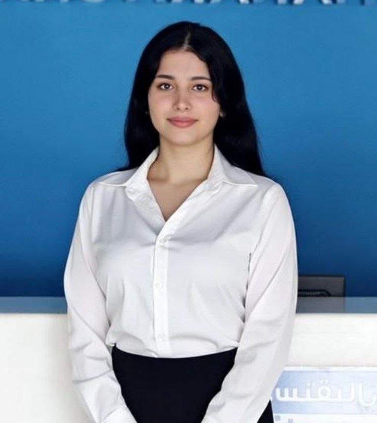

Robotics & Intelligent Systems Engineer
"I believe in human potential without limits. When the body reaches its boundaries, the mind creates a path beyond."
A dedicated engineer specializing in rehabilitation robotics, adaptive control systems, and human-centered AI. My research focuses on creating intelligent systems that augment human capability, particularly for individuals with mobility challenges.
Born from adversity in a conflict-affected region, I channel resilience into technological innovation that bridges gaps between human limitation and possibility.
I believe that the most meaningful engineering solutions emerge at the intersection of technical excellence and human empathy. My research in rehabilitation robotics is driven by a commitment to creating technology that not only demonstrates engineering sophistication but also addresses real human needs with sensitivity and practicality.
Through my studies and research projects, I've developed expertise in intelligent control systems, computer vision, and human-robot interaction, always with a focus on creating accessible solutions for healthcare applications.
Designing intelligent assistive devices with adaptive control strategies that respond to individual user needs and recovery progress.
Developing sophisticated control algorithms that enable precise, responsive, and safe human-robot collaboration in therapeutic settings.
Creating vision-based systems for natural human-robot interaction, enabling devices to understand and respond to human movement intuitively.